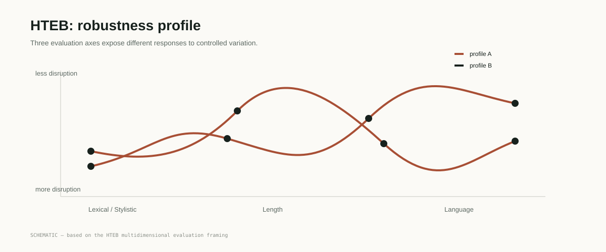

EACL 2026
01 · PTEB
Robustness through stochastic paraphrasing
PTEB generates meaning-preserving paraphrases at evaluation time and aggregates performance across multiple stochastic runs.
Read at ACL Anthology ↗Research programme · Dynamic NLP evaluation
Dynamic and distribution-based evaluation in NLP — from stochastic paraphrasing, to explicit robustness axes, to Measurement-as-Distribution.
The premise
Benchmarks often compress a broad capability into one fixed sample, one perturbation regime, and one reported score. This work asks what changes when evaluation itself becomes a source of evidence: inputs vary, conditions are explicit, runs are repeated, and results are reported as distributions rather than isolated points.
Research arc
The progression is deliberate: first introduce stochasticity, then expose dimensions of robustness, then generalise the evaluation logic beyond embedding benchmarks.
PTEB generates meaning-preserving paraphrases at evaluation time and aggregates performance across multiple stochastic runs.
Read at ACL Anthology ↗HTEB extends the evaluation beyond paraphrasing through Lexical / Stylistic, Length and Language transformations, separating score change from ranking stability.
Read the preprint ↗Measurement-as-Distribution turns the earlier empirical ideas into a model- and task-agnostic protocol: specify, generate, perturb, evaluate and report.
See the protocol ↓Publications
Manuel Frank · Haithem Afli · EACL 2026 · Long Paper
Manuel Frank · Haithem Afli · EMNLP 2026 · Main Conference
Haithem Afli · Manuel Frank · EMNLP 2026 · Findings
HTEB
HTEB evaluates three axes — Lexical / Stylistic, Length and Language — using generated transformations and explicit validation.

Measurement-as-Distribution
The MD protocol makes five stages explicit. The aim is not to replace every benchmark with a distribution, but to make the assumptions and evidence behind an evaluation inspectable.
Specify the capability and the claim the evaluation is intended to support.
Create evaluation evidence with a principled, reproducible process.
Introduce validated variation while preserving the intended construct.
Repeat evaluation so uncertainty and variability become observable.
Report distributions and stability alongside point estimates.
Research findings
A model may retain its relative ordering while its absolute score shifts under valid perturbation.
Lexical / stylistic, length and language variation can produce partly decoupled robustness profiles.
Once inputs and conditions vary, the measurement itself carries information about uncertainty and stability.
Research home
This work connects practical benchmark design with broader questions about reliable and trustworthy evaluation in NLP.